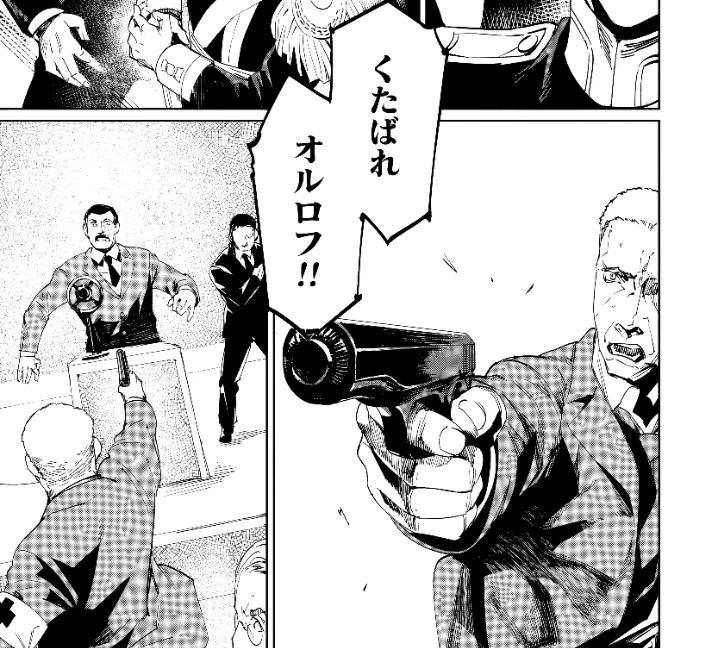
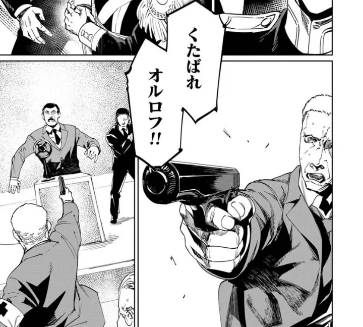

v7.5 Latest Release • Windows 10 / 11 (x64)
Offline PSD, PDF & Vulkan AI Studio
Batch-convert images, extract Photoshop .psd layers, rasterize .pdf pages, upscale manga & illustrations with 22 MangaJaNai NCNN models, stitch webtoon strips, and inspect every pixel before/after.
Mobile Lite View active — blur effects disabled for smooth scrolling on phones. Download runs on Windows 10/11 (x64) PCs.


Scroll on PC or pinch with two fingers on mobile to zoom (1x–6x) • Drag to pan when zoomed
6 Focused Workspaces
Switch tabs with keyboard shortcuts or drag folders directly into any queue.
What's New in v7.5
Smaller downloads, smarter routing, multi-batch visual comparison, and smoother progress telemetry.
GitHub-Hosted JaNai Weights
Removed ~573 MB of static weights from the installer. Download only the SPAN, FDAT, or ESRGAN models you need directly inside the app.
Per-File Pass Inspection
Click any queued file to inspect detected color/grayscale classification, height tier snapping, and 2-pass chained workflows before converting.
Retained History & Cleanup
Keep Before/After sets across multiple runs with a batch switcher, cache-busted previews, and automatic deleted-file removal.
Fractional Telemetry
Weighted fractional EMA ETA tracker eliminates sudden tile jumps across Converter, Upscaler, Denoiser, and JaNai batches.
Translucent or Opaque Progress
Prefer higher contrast over busy wallpapers? Switch the floating draggable Progress HUD between translucent and opaque styles in Settings.
Clean Tile Alignment
Reflect-padded block alignment, overlap tile blending, EXIF auto-orientation, alpha preservation, and automatic FP16-to-FP32 GPU fallback.
Comprehensive AI Engine Matrix
Bundled native Vulkan engines plus optional on-demand NCNN model packs.
| Engine | Models / Families | Scale Factors | Noise / Controls | Best For |
|---|---|---|---|---|
| JaNai NCNN | 22 downloadable MangaJaNai & IllustrationJaNai packs (SPAN, FDAT, ESRGAN) |
2x, 4x, or 2-pass chained |
Auto-routed detail/denoise, Tile overlap, FP16/FP32 | Manga pages, screentones, digital illustrations, CGs |
| Upscayl / Real-ESRGAN | realesr-animevideov3, realesrgan-x4plus, realesrnet-x4plus, esrgan-x4 + 11 packs |
2x, 3x, 4x, 8x |
SSAA post-resize, custom NCNN downloads | Photography, anime stills, paintings, UltraSharp/Remacri |
| Real-CUGAN | models-se, models-pro, models-nose |
2x, 3x, 4x, 8x |
Noise -1..3, SyncGap (-c) |
Clean line art and cel-shaded artwork without tile seams |
| Waifu2x (20250915) | models-cunet, upconv_7_anime, upconv_7_photo |
1x, 2x, 4x, 8x |
Noise -1..3, Grain Preserve |
Classic 1x denoising & fast illustration/photo upscaling |
| SRMD | models-srmd |
2x, 3x, 4x, 8x |
Noise -1 to 10 |
Noisy camera captures, vintage scans, high-ISO photos |
JaNai NCNN
22 on-demand MangaJaNai & IllustrationJaNai models (SPAN, FDAT, ESRGAN) with grayscale/color auto-routing.
Upscayl / Real-ESRGAN
Built-in AnimeVideoV3 & RealESRGAN+ plus 4x-UltraSharp, 4x-Remacri, Digital Art 4x, and SSAA resize.
Real-CUGAN
models-se, models-pro, and models-nose with noise -1..3 and seam sync.
Waifu2x 2025 & SRMD
1x compression cleanup with Grain Preserve blending and SRMD noise levels -1..10.
Download ImageTool for Windows
Choose either the standard Setup Installer or self-contained Portable archive.
Recommended
Windows Setup Installer (.exe)
Installs shortcuts and automatically keeps settings.json and downloaded AI model packs safely in %LOCALAPPDATA%\ImageTool.
ImageTool-v7.5-Setup.exe • ~299.8 MB
Download Setup Installer
No Admin Required
Portable Windows x64 (.zip)
Extract anywhere and run ImageTool\ImageTool.exe. User preferences and downloaded models stay portable beside the executable.
ImageTool-v7.5-Portable-win64.zip • ~329.8 MB
Download Portable (.zip)